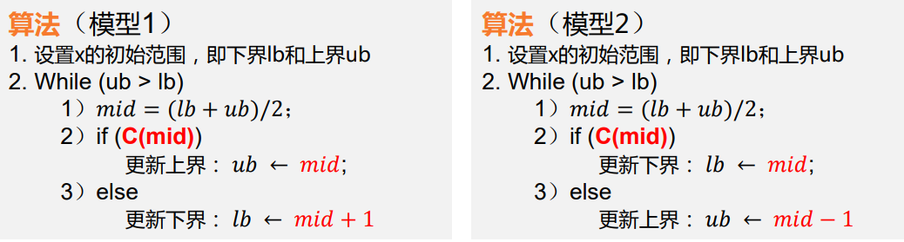
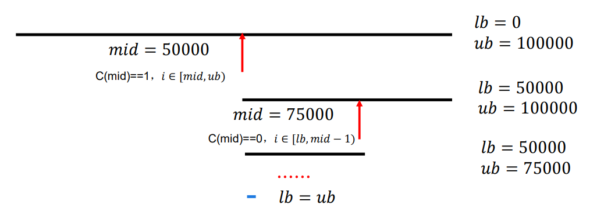
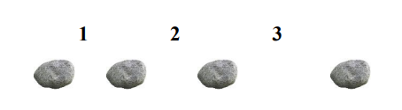

第二章枚举
第二章 枚举
1.1 枚举基本原理
枚举算法也称之为穷举算法，就是按照问题本身的性质，一 一列举出该问题所有可能的解，并在列举的过程中，逐一检验每个可能解是否是问题的真正解。若是则采纳个解；否则抛弃它。
一般情况下:
- 枚举算法的解准确和全面
- 实现简单, 通过循环/递归实现
- 执行效率提升空间往往比较大
枚举基本步骤
- 确定枚举对象
- 逐一列举可能解
- 逐一验证可能接
2.2 模糊数字匹配
任务描述
一张单据上有一个5位数的编码，因为保管不善，其百位数已经变得模糊不请。但是知道这个5位数是57和67的倍数。现在要设计一个算法，输出所有满足这些条件的5位数，并统计这样的数的个数。
输入:
每一行对应一个测试样例，每一行包含4个数字，依次是万位数，千位数，十位数和个位数。最后一行包含4个-1，表示输入结束。
输出:
每组测试样例的结果输出占一行，第一个数字表示满足条件的编码个数，后面按升序输出所有满足条件的编码，数字与数字之间用空格隔开。

问题分析
枚举对象: \(Obj(h)\)即百位数字, \(h \in [0,9]\)
逐一列举
for(int h = 0;h < 10;h++)逐一验证: \(19h95\)能否整除\(57\)和\(67\)
2.3 百钱百鸡问题
任务描述
我国古代数学家张丘建在《算经》中出了一道题“鸡翁一，值钱五；鸡母一，值钱三；鸡雏三，值钱一。百钱买百鸡，问鸡翁、鸡母、鸡雏各几何？”，现在假定各鸡种的价格不变，拥有的钱数为m，需要购买的鸡数为n，试求出所有可能的购买方案总数。
输入:
每行对应一个测试样例，每一行包含2个数字，分别为n 和m 。最后一行包含2个-1，表示输入结束。
输出:
每组测试样例的结果输出占一行，输出可能购买方案总数。
问题分析
枚举对象：\(Obj(n_1,n_2,n_3)\)
鸡翁数，记为\(n_1, n1=0\sim n\)
鸡母数，记为\(n_2, n_2=0\sim n\)
鸡雏数，记为\(n_3,n_3=0\sim n\)
注意列举
1 | for(n1=0; n1<=n; n1++) |
- 逐一验证
1 | n1 + n2 + n3 == n; |
2.4 数组配对
任务描述
给你一个长度为\(n\) 的数组 \(A\) 和一个正整数 \(k\) 问从数组中任选两个数使其和是 \(k\) 的倍数 有多少种选法 。 对于数组 \(a_1=1,a_2=2,a_3=3\) 而言： \((a_1,a_2)\)和\((a_2,a_1)\)被认为是同一种选法； \((a_1,a_2)\)和\((a_1,a_3)\)被认为是不同的选法 。
输入：
第一行有两个正整数\(n, k\) 。 \(n<= 1000000\), \(k<= 1000\) 第二行有 \(n\) 个正整数 每个数的大小不超过 \(10^9\)
输出：
选出一对数使其和是\(k\) 的倍数的选法个数
问题分析
- 枚举对象: \(Obj(a_i,a_j), 1\le i < j \le n\)
- 逐一列举
1 | for(i = 0; i < n;i++) |
- 逐一验证: \((a_i + a_j)\% k = 0\)
2.5 优化
很多枚举算法都可以通过二分思想进行优化
二分枚举基本思想
使用二分思想优化枚举算法时, 有两种基本情况:
"求满足某个条件\(C(x)\)的最小\(x\)", 其中\(C(x)\)满足性质: 如果任意\(x\)满足\(C(x)\), 则所有的\(x'\ge x\)也满足\(C(x')\)
"求满足某个条件\(C(x)\)的最大\(x\)", 其中\(C(x)\)满足性质: 如果任意\(x\)满足\(C(x)\), 则所有的\(x'\le x\)也满足\(C(x)\)
相应的, 也有用两种基本的转化方法:

绳子切割问题
任务描述
有\(N\)条绳子，它们的长度分别为\(L_i (\le 1000)\)。如果从它们中切割出\(K\)条长度相同的绳子的话，这\(K\)条绳子每条最长能有多长？答案保留到小数点后2位。
输入： \[ \begin{align*} N &= 4 \\ K &= 11\\ L &= [8.02, 7.43, 4.57, 5.39] \end{align*} \] 输出:
\(2.0\)(每条绳子分别可以得到4条、3条、2条、2条，共计11条)
问题分析
- 枚举对象: \(L, 0.00\le L\le 1000.00\)
- 逐一列举: 一层for循环，按照 \(L\) 从大到小以步长为\(0.01\)遍历。
- 逐一验证： 判断\(\sum\limits_{i=1}^{N} [L_i/L] \ge K\)
二分优化

移动石头问题
任务描述
有一条河，河中间有一些石头，石头的数量以及相邻两块石头之间的距离已知。现在可以移除一些石头， 假设最多可以移除\(m\)块石头（注意：首尾两块石头不可以移除，且假定所有的石头都处于同一条直线）， 问最多移除\(m\)块石头后相邻两块石头之间的最小距离的最大值是多少？
输入:
多组输入（<=20组数据，读入以EOF结尾）， 每组第一行输入两个数字：n(2<=n<=1000)为 石头的个数，m(0<=m<=n-2)为可移除的石头数 目，随后n-1个正整数，表示顺序相邻两个石头的 距离d(d<=1000)。
输出:
每组输出一行结果，表示最大值。

问题分析
- 枚举对象: \(StoneSet(S_1, S_2, \cdots, S_{m-1}, S_m)\)
- 逐一列举:
for(s:StoneSet) - 逐一验证:
for(s:StoneSet) s >= mins
二分优化
问题转化: 最多移除\(m\)个石头后任意相邻两个石头的距离不小于\(d\)
判定:
- 循环考虑相邻石头, 如果距离小于\(d\), 则去掉一个石头
- 如果任意相邻石头的距离都不小于\(d\), 则返回
false - 如果移除的石头个数大于\(m\),
则返回
false